2024年北京市中考化学真题 · 选择题 第16、17、18、19、20题
16. 秋分吃桂花糕。桂花中含甜菜碱（
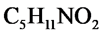
），下列关于的说法正确的是A. 由三种元素组成B. 氢、氮元素质量比为11：14
C. 氢元素的质量分数最大D. 碳、氧原子个数比为2：5
为实现“双碳”目标，我国积极推动能源绿色低碳安全高效转型。
17. 下列燃料在
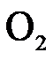
中充分燃烧时，不会产生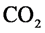
的是A.
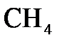
B. COC. 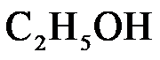
D. 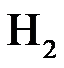
18. 为实现高效光催化分解水制氢，科研人员开展
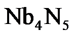
纳米复合光催化材料的研究。铌（Nb）在元素周期表中的原子序数是41，下列关于Nb的说法不正确的是A. 质子数是41B. 核电荷数是41C. 原子质量是41D. 核外电子数是41
19. 与在一定条件下反应生成和CO，该制氢反应 微观示意图如图所示：
微观示意图如图所示：
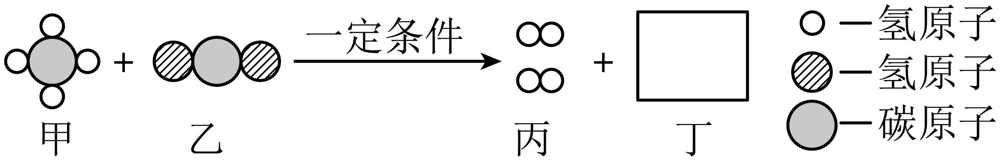
图中丁的微观图示为
A. B.
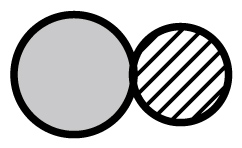
C. 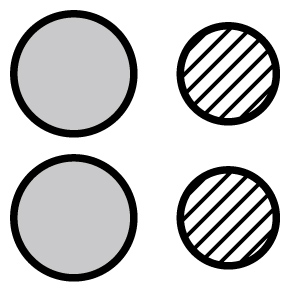
D. 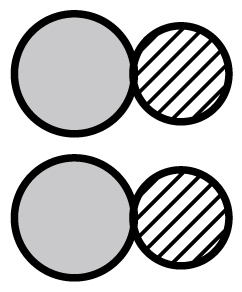
20. 甲烷水蒸气重整制氢的反应为
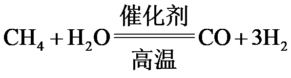
，下列说法不正确的是A. 反应涉及两种氧化物B. 反应前后氢原子个数不变
C. 生成的CO、的分子个数比为1：1D. 参加反应的、 的质量比为8：9
的质量比为8：9
硼酸在生产生活中有广泛应用。20℃时，进行如下实验。完成下面小题。
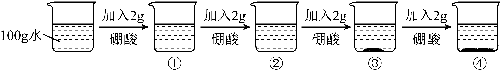
资料：20℃时，硼酸的溶解度为5.0g；40℃时，硼酸的溶解度为8.7g。